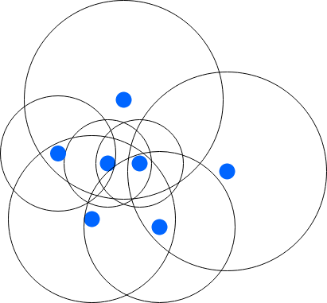
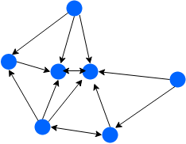
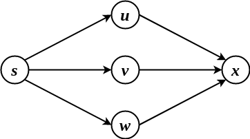

ADRC - Lesson 10
Indice
1 Radio Networks
In questa parte vedremo un modello che più si presta a reti fisiche reali.
1.1 Il modello Radio Network
Una radio network è un insieme di dispositivi fisici collocati in uno spazio euclideo, ognuno dei qua dotato di un trasmettitore radio (o wireless).
Ogni nodo \(v\) della rete ha un fissato raggio di trasmissione \(r(v) > 0\), entro il quale potrà trasmettere il suo segnale.
Un qualsiasi nodo \(w\) per ricevere un messaggio da \(v\) deve essere ad una distanza minore del raggio di trasmissione \(r(v)\)
\[
\Vert v - w \Vert \leq r(v)
\]
Inoltre il nodo \(v\) non può selezionare a quale dei suoi nodi vicini inviare il messaggio e a quali no: il messaggio verrà trasmesso in broadcast a tutti i nodi
entro il raggio di trasmissione di \(v\).
Questo tipo di comunicazione è detta node based1.
Data quindi una rete radio si può costruire una grafo diretto delle comunicazioni, in cui esiste l'arco diretto \((u,v)\) solo se \(v\) è coperto dal raggio di trasmissione di \(u\).

Figura 1: Rete radio.

Figura 2: Grafo di connessione relativo.
Le reti radio sono anche dette unknown in quanto i nodi non hanno nessuna conoscenza in merito agli altri nodi e alla loro posizione, perciò è come considerare un grafo
in cui i nodi non conoscono il loro vicinato, in cui hanno una sola porta dalla quale trasmettere il messaggio e basta.
Infine le reti radio sono considerate essere un sistema completamente sincrono
Tutti i nodi condividono un clock globale, perciò diremo che i nodi agiscono in time slots
Inoltre si assume che i messaggi vengono trasmessi nella propria area di stramissione in un solo time slot.
1.2 Modello d'interferenza
In un contesto reale, in genere, se troppi dispositivi trasmettono nello stesso momento e in una stessa area si crea troppo rumore, o interferenza.
In una rete radio quindi, se un nodo \(v\) riceve più di un messaggio in uno stesso time slot, assumeremo che si crei una interferenza e che quindi \(v\) non ha ricevuto il messaggio.
Più formalmente diremo che il nodo \(v\) viene informato al time slot \(t>0\) se e solo se esiste un unico suo vicino che gli trasmette il messaggio al tempo \(t\).
1.3 Broadcast su reti radio
Uno dei task più comuni in un ambiete reale è quello del broadcast di un segnale su una rete radio.
Come accennato, questo task soffre del problema dell'interferenza, perciò si vuole trovare un protocollo che porti a termine il broadcast di un'informazione considerando questa ulteriore difficoltà.
Modelliamo quindi il problema considerando come grafo il grafo di comunicazione \(G\) derivato dalla rete radio, assumendo di trovarci sotto le seguenti assunzioni:
- Sistema sincrono ogni nodo condivide uno stesso clock globale che standisce le azioni.
- Unica sorgente \(s\) che avvia il protocollo.
- Connettività di \(G\), non necessariamente forte, quantomeno ogni nodo deve essere raggiungibile dalla sorgente \(s\).
- Presenza di interferenze come descritta nella precedente sezione: un nodo \(v\) viene informato al tempo \(t\) se esiste un unico nodo che al tempo \(t-1\) gli trasmette il messaggio.
Come primo passo potremmo iniziare considerando il protocollo di flooding discusso nella lezione 3. È facile trovare un controesempio in cui il protocollo non informerà mai tutti i nodi

Figura 3: Controesempio in cui il protocollo flooding non funziona.
Consideriamo il grafo di comunicazione nella precedente immagine, e supponiamo che la sorgente sia il nodo \(s\).
Al time slot \(t_0\) la sorgente \(s\) invierà il messaggio ai nodi \(u,v,w\), e al time slot successivo i nodi \(u,v,w\) invieranno il messaggio al nodo \(x\), causando un interferenza.
Dopo che \(u,v,w\) avranno trasmesso, essi entrarenna nello stato done e non trasmetteranno mai più.
Così facendo il nodo \(x\) non riceverà mai il messaggio, e il task non sarà mai risolto.
1.4 Protocollo Round-Robin
Assumiamo che i nodi siano univocamente identificati da un valore nell'intervallo \(\left[ 1, n \right]\), e che tutti i nodi conoscano una buona approssimazione di \(n\).
Per semplicità al momento assumiamo che conoscano il valore esatto di \(n\).
L'idea del protocollo Round-Robin (in breve RR) è quella di scandire il protocollo in fasi con durata complessiva di \(n\) time slots ciascuno.
Dato che ogni fase \(k \geq 0\) dura esattamente \(n\) istanti, ogni nodo con etichetta \(i\) trasmetterà al time slot \(i\)-esimo della fase \(k\).
Più formalmente per ogni \(k \geq 0\), il nodo \(i\) può trasmettere solo negli istanti \(kn + i\).
Importante osservare che è possibile definire una scansione temporale delle azioni da svolgere grazie all'assunzione di sincronismo del sistema.
Questo sistema ci garantisce che non è possibile che accada una situazione d'interferenza, in quanto può "paralre" (trasmettere) un solo nodo alla volta.
if self.state == "SOURCE":
spontaneously:
self.state = "INFORMED"
elif self.state == "ASLEEP":
receiving(msg):
self.state = "INFORMED"
elif self.state == "INFORMED":
global clock, n
if clock % n == self.id:
transimt(msg)
self.state = "DONE"
elif self.state == "DONE":
None
1.4.1 Correttezza
. THM Nel protocollo RR sotto le precedenti assunzioni, tutti i nodi a distanza \(k\) dalla sorgente \(s\) verranno informati entro \(k\) fasi.
Proof La dimostrazione di questo teorema varrà fatta per induzione sulla distanza \(k\).
Il passo base è abbastanza semplice, in quanto nella prima fase l'unico nodo a trasmettere sarà la sorgente \(s\) nel time slot \(id(s)\).
Supponiamo quindi per ipotesi induttiva che sia vero che per ogni fase \(k > 0\) ogni nodo nell'insieme \(L_k\) (ovvero i nodi a distanza esattamente \(k\) dalla sorgente)
verrà informato entro la fine della fase \(k\).
Consideriamo ora un qualsiasi nodo \(w \in L_{k+1}\).
Per definizione di \(L_{k+1}\), esiste alemeno un nodo in \(v \in L_k\) tale che esista l'arco diretto \((v,w)\).
Per ipotesi induttiva, sappiamo che entro la fine della fase \(k\) il nodo \(v\) è stato informato.
Se \(v\) ha ricevuto il messaggio in un time slot \(kn + i < kn + id(v)\), allora \(v\) può trasmettere durante la fase \(k\) stessa al tempo \(kn + id(v)\), altrimenti se ha ricevuto il messaggio
a un time slot \(kn + i > kn + id(v)\), allora \(v\) trasmetterà certamente nell fase \(k+1\), più precisamente al time slot \((k+1)n + id(v)\).
In ogni caso, per definizione del protocollo RR, sia che \(v\) trasmetta al temp \(kn + id(v)\) sia che trasmetta al tempo \((k+1)n + id(v)\), sarà l'unico che in quel momento invierà il messaggio a \(w\).
Perciò possiamo affermare che \(w\) riceverà almeno una volta il messaggio senza alcuna interferenza, e questo vale per ogni \(w \in L_{k+1}\).
Infine, per ipotesi di connettività di \(G\), sappiamo che per ogni nodo \(x \in V\) esiste un intero \(h\) tale che \(x \in L_h\) \(\square\).
1.4.2 Terminazione e time complexity
Sia \(D\) l'eccentricità della sorgente \(s\), ovvero il più lungo dei cammini minimi che partono da \(s\).
Sicuramente in \(D\) fasi tutti i nodi della rete verranno informati grazie al protocollo RR.
Il problema è che nessun nodo conosce né l'eccentricità di \(s\), ne il diametro della rete.
Però è noto che in una rete connessa di \(n\) nodi il diametro è al più \(n-1\).
Perciò, dato che ogni nodo conosce il valore \(n\), ognuno può stabilire che entro al più \(n-1\) fasi tutti i nodi saranno informati, e quindi potranno terminare l'esecuzione del protocollo.
Segue quindi il seguente teorema
THM Sia la rete \(G\) con \(n\) nodi e sorgente \(s\) di eccentricità \(D\).
Sotto le precedenti assunzioni il protocollo RR completerà il suo task in esattamente \(nD \in O(n^2)\) time slots e tutti i nodi termineranno l'esecuzione del protocollo in \(O(n^2)\) time slots.
1.4.3 Message complexity
La message complexity di questo protocollo è banale, in quanto ogni nodo trasmetterà lungo tutti i suoi archi uscenti una volta sola il messaggio, perciò la message compelxity sarà pari al numero di archi del grafo di trasmissione \[ MSG(\texttt{RR}) = |E| \]
1.5 Generalizzazione del problema
Fin ora abbiamo assunto che tutti i nodi hanno una conoscenza di \(n\), oppure una sua buona approssimazione.
Per esempio, se tutti i nodi avessero come approssimazione di \(n\) un valore del tipo \(3.5n\), l'efficienza del protocollo RR in temrmini asintotici non cambia.
Supponiamo ora invece che i nodi abbiano un'approssimazione \(N\) del numero di nodi \(n\).
Col protocollo RR il tempo di terminazione globale2 sarà \(O(N^2)\).
Purtroppo però, se \(N \approx n^2\) il tempo di terminazion del protocollo sarà dell'ordine di \(O(n^4)\), e se \(N \approx 2^n\) il tempo di completamento sarà \(O(2^{2n})\) (molto male!).
Supponiamo in maniera ancor più generale che i nodi della rete non conoscano affatto \(n\) né una sua stima.
Generalmente, in questi casi in cui non si conoscono alcuni parametri importanti per il problema, si ricorre alla tecnica della simulazione, in cui si provano tutti i possibili valori
che i parametri mancanti possono assumere.
In questo caso quindi, dato che stiamo in un sistema totalmente sincrono, si eseguirà per prima cosa il protocollor RR supponendo che \(n\) sia pari ad 1, poi si ripete supponendo che sia uguale 2, e così via…
Così facendo, esisterà un tempo \(t\) nel quale verrà eseguito il protocollo col corretto valore di \(n\), portando a termine così il task del bradcast su reti radio.
def round_robin(n):
clock = 0
if self.state == "SOURCE":
self.state = "INFORMED"
for fase in range(n):
for round in range(n):
if self.state == "ASLEEP":
receiving(msg):
self.state = "INFORMED"
elif self.state == "INFORMED":
if clock % n == self.id and self.id <= n:
transimt(msg)
self.state = "DONE"
elif self.state == "DONE":
None
clock += 1
i = 1
while True:
round_robin(i)
i += 1
Importante specificare però, che qualora un nodo abbia una etichetta \(x\) maggiore del corrente valore di \(n\), esso non dovrà mai essere in grado di mandare il messaggio, in quanto potrebbe
esistere un altro nodo con etichetta \(y \leq n\) tale che \(x \equiv_n y\), e quindi potrebbero occorrere interferenze.
In questo caso il task verrà completato in un tempo dell'ordine di \[ TIME = \sum_{i=1}^{n} TIME(\texttt{round_robin}(i)) = \sum_{i=1}^{n} \Theta(i^2) \in \Theta(n^3) \]
1.5.1 Terminazione Locale
Consideriamo il nodo \(v_j\) con etichetta \(id(v_j) = j\), e consideriamo l'esecuzione del protocollo di RR di parametro \(n = i\) in cui \(v_j\) viene informato.
Se abbiamo che \(j < i\), sappiamo che se siamo fortunati \(v_j\) trasmetterà il messaggio direttamente nella fase \(i\), altrimenti dovrà attendere la fase successiva \(i+1\).
Se invece abbiamo che \(j > i\), allora sappiamo che \(v_j\) non parlerà mai nella simulazione del RR \(i\)-esima.
Esisterà comunque un tempo \(i^\star \geq j\) in cui \(v_j\) avrà opportunità di trasmettere il messaggio ai suoi vicini.
In entrambi i casi, per come è costruito il protocollo, sappiamo che quando \(v_j\) trasmetterà non ci potranno essere altri nodi che trasmetteranno nello stesso istante.
Perciò \(v_j\) informerà tutti i suoi vicini senza interferenze, e potrà concludere localmente il suo compito, passando allo stato done.
1.5.2 Ottimizzazione
Una ottimizzazione abbastanza intuitiva, è quella di non far crescere il valore simulato di \(n\) in maniera lineare, bensì in maniera esponenziale.
Ovvero, iteriamo le simulazioni del protocollo RR ponendo il parametro \(n = 2^i\), per ogni \(i > 0\).
Per quanto riguarda il completamento del task, esisterà certamente un certo \(i\) tale cke \(2^{i-1} < n \leq 2^i\), garantendo quindi che entro \(2^i\) simulazioni tutti i nodi verranno informati.
Per il tempo di completamento invece, basta osservare che ci saranno al più \(\lceil \log_2{n} \rceil\) simulazioni, ognuna delle quali con complessità temporale di \(O(n^2)\). Perciò avremo che \[ TIME = \sum_{i=1}^{\lceil \log_2{n} \rceil} TIME(\texttt{round_robin}(2^i)) = O(n^2\log{n}) \in o(n^3) \]